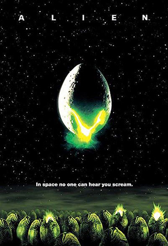
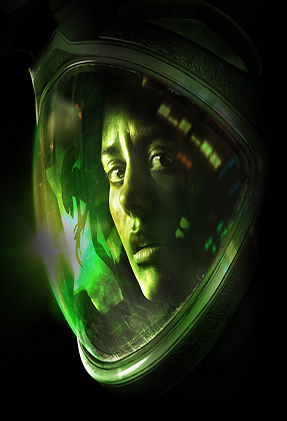

Las mejores reseñas dentro del universo más aterrador
Fanáticos del terror nació con la idea de crear un espacio
para todos los amantes de este género. Aquellos que están en búsqueda de nuevas experiencias
para atormentar sus noches o para escribir sus propias reseñas de sus obras favoritas. Ya sea películas, videojuegos
o libros de terror, acá podrás encontrar críticas de obras de todo tipo ligadas al horror.
El Exorcista (1973)
Adaptación de la novela de William Peter Blatty que se inspiró en un
exorcismo real ocurrido en Washington en 1949. Regan, una niña de doce
años, es víctima de fenómenos paranormales como la levitación o la
manifestación de una fuerza sobrehumana. Su madre, aterrorizada, tras
someter a su hija a múltiples análisis médicos que no ofrecen ningún
resultado, acude a un sacerdote con estudios de psiquiatría. Este,
convencido de que el mal no es físico sino espiritual, es decir, una
posesión diabólica, decide practicar un exorcismo. Seguramente la película
de terror más popular de todos los tiempos.
9.8
Ver más →
Sillent Hill 2 (2001)

James Sunderland ha llegado al pueblo de Silent Hill después de haber recibido
una carta de su esposa, Mary, a pesar de que había muerto de una enfermedad hace tres años.
La carta afirma que Mary está a la espera de James en su "lugar especial", lo que confunde a James,
ya que todo el pueblo de Silent Hill era su "lugar especial", pero finalmente decide dirigirse a
Rosewater Park.
9.7
Ver más →
Alien: El octavo pasajero (1979)

De regreso a la Tierra, la nave de carga Nostromo interrumpe su viaje y
despierta a sus siete tripulantes. El ordenador central, MADRE, ha
detectado la misteriosa transmisión de una forma de vida desconocida,
procedente de un planeta cercano aparentemente deshabitado. La nave
se dirige entonces al extraño planeta para investigar el origen de la
comunicación.
La película fue pionera en utilizar a una mujer como heroína de acción
y usó el terror psicológico para infundir el miedo por un monstruo al
que no vemos hasta el final. Alien tuvo un gran éxito de taquilla y
recibió una gran acogida por la crítica. Recibió un Premio de la Academia
por "Mejores Efectos Visuales".
9.5
Ver más →
Outlast (2013)

Miles Upshur, un periodista independiente de un periódico de Denver, recibe un correo
electrónico anónimo que le asegura que, en un hospital psiquiátrico llamado Mount Massive,
están sucediendo sucesos extraños, desde que la corporación Murkoff la compró hace un año.
Cuando llega a la entrada, se encuentra con numerosos camiones del ejército estacionados en la entrada.
Una vez que Upshur logra acceder al interior del complejo, descubre a todos los guardias y agentes
de la división táctica de Murkoff masacrados en el interior de la biblioteca. El único superviviente,
que agonizaba luchando entre la vida y la muerte, le ordena que salga del edificio o sino moriría.
9.4
Ver más →
Scream (1996)

Un año después del asesinato de su madre, una adolescente es aterrorizada por un nuevo asesino
que tiene como objetivo a ella y a sus amigos, utilizando las películas de terror como parte
de un juego mortal. Ella comienza a sospechar si estos asesinatos están relacionados y trata de
encontrar al asesino ya que todos parecen ser sospechosos.
Scream es una película de terror slasher de 1996 escrita por Kevin Williamson y dirigida por Wes Craven,
y fue filmada mayormente en Santa Rosa (California). La película recibió cuatro secuelas:
Scream 2 en 1997, Scream 3 en 2000, Scream 4 en 2011 y Scream en 2022.
9.2
Ver más →
Alien: Isolation (2014)

Amanda Ripley, la hija de la legendaria teniente Ellen, protagonista del filme
original de 1979, recibe la noticia de que la caja negra del Nostromo fue
recuperada del espacio y se encuentra en Sevastopol, una inmensa estación
espacial. Junto con otros 2 miembros de la tripulación
del Torrens, Amanda se prepara para ingresar en el Sevastopol, pero un accidente durante
el procedimiento la separa de sus compañeros. Tras un difícil abordaje, Amanda encuentra
la nave en un estado de abandono catastrófico, lleno de humanos hostiles, androides
descompuestos y la amenaza desconocida del Xenomorfo, por lo que tendrá que hacer uso de todo
tipo de recursos para recuperar la caja negra, reunirse con su grupo y escapar.
9.2
Ver más →